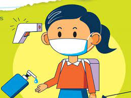

COLORIMETRIA
Podemos definir la colorimetría como la ciencia que estudia las medidas cualitativas y cuantitativas del color. Nos ayuda a medir y combinar los colores según las necesidades de cada momento. Las variables del color son:
- Luminosidad: cantidad de luz
- Tono:longitud de onda dominante
- Saturación: medida en que un color se aleja del gris
PRIMER FILTRO
Continuamente,los estudiantes,el personal docente y admnistrativo,
asi como sus familias,deberas identificar y atender los sintomas de un posible contagio;
en este contexto se recomienda que los estudiantes,personal docente y administrativo deben
quedarse en casa si presentan algunos de los siguientes sintomas:
- TEMPERATURA CORPORAL MAYOR A 37.5°C
- Dificultad para respirar
- Nauseas
- Vomito
- Tos o congestion nasal
- Dolor de garganta
- Diarrea
- Dolor muscular
- Perdida de olfato y/o gusto
SEGUNDO FILTRO
EN EL ACCESO A LAS INSTALACIONES
Con el objeto de verificar que las personas que ingresen a las instalaciones no
representen un riesgo de contagio para el resto de la comunidad educativa,se recomienda
implementar un control de accesp con filtros sanitarios,conformer a lo siguiente:
Establecer una o mas personas encargadas del filtro sanitario en cada una de las
puertas de acceso de la institucion,tanto para los accesos peatonales y vehiculares.
- Las personas encargadas del filtro de ingreso deberan:tomar la temperatura,aplicar
alcohol en gel al 60-70%,supervisar que se cumpla con la sana distancia y que porten
equipo de proteccion personal
- Proveer a las personas encargadas del filtro sanitario el equipo de proteccion
necesario para su uso personal:cubrebocas,careta,guantes,alcohol en gel 60-70%.
- Proveer a las personas encargadas los insumos necesarios para realizar el filtro
sanitario:alcohol en gel 60-70% y termometro digital.
- La institucion debera contar con estaciones de limpieza cerca de los lugares asignados
para el desarrollo de las actividades,los cuales deberas contar con alcohol en gel al 60-70%
y desinfectante de objetos
PROTOCOLO PARA EL INGRESO A LAS INSTALACIONES
Es responsabilidad de la institucion educativa realizar una encuesta de salud a los estudiantes
y personal que ingresara a las instalaciones a fin de identificar si tienen algun sintoma relacionado con COVID.
Las instituciones educativas deberan llevar un registro de las personas que asiten a actividades presenciales con el objeto de llevar un control y poder rastrear posibles contagios y sus contactos de tal modo que se eviten aglomeraciones.
RECOMENDACIONES GENERALES
- Todos los integrantes de la comunidad educativa deberan ingresar a la institucion con
cubrebocas protegiendo boca y nariz.
- Establecer e implementar mecanismos para programar y controlar la entrada y salida de la comunidad educativa,evitando ingresos y egresos masivos a horas determinadas
- Solo permitir el ingreso de estudiantes para sus actividades academicas,restringiendo el acceso a zonas de descanso,pasillos de circulacion o salas de espera.
- Se siguiere que aquellas personas que se encuentren en los grupos vulnerables definidos por la secretaria de salud e identificados por la institucion,no asistan a las instalaciones.
- Demarcar y asegurar la distancia fiisca de 1.5 metros en las filas de ingreso en todo momento.
- separar los puntos de entrada y de salida para minimizar el contacto entre las personas.
La correcta observacion de la señalizacion y dermarcacion facilitara la circulacion de las personas por las instalaciones y el distanciamiento fisico
HAZ CLICK EN LA IMAGEN PARA DIRIGIRTE AL AVISO OFICIAL
